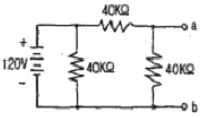
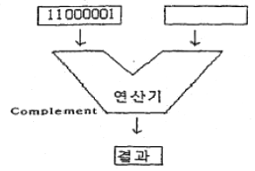
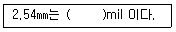
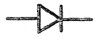
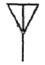
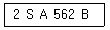
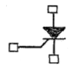

전자캐드기능사 (2009-03-29 기출문제)
1과목: 전기전자공학(대략구분)
1. 정전용량이 20[㎌]인 커패시터의 극판 간격을 1/4 로 줄였을 때 정전용량은 몇 [㎌]인가?
- 20[㎌]
- 40[㎌]
- 60[㎌]
- 80[㎌]
(정답률: 79%)

2. 다음과 같은 회로에서 ab 사이의 단자 전압은 몇 [V]인가?

- 20[V]
- 40[V]
- 60[V]
- 80[V]
(정답률: 51%)
3. 발진회로에서 발진주파수의 변동을 가져오는 요인이 아닌 것은?
- 부하의 변동
- 주위 온도의 변화
- 전원전압의 변동
- 완충증폭기의 사용
(정답률: 55%)
4. 다음 중 RC 이상형 발진회로에 대한 설명으로 적합하지 않은 것은?
- 정현파 발진기의 일종이다.
- 저주파 발진용으로 주로 사용된다.
- 전압증폭도는 29 보다 작아야 한다.
- R, C 값을 조정하여 주파수를 조정할 수 있다.
(정답률: 58%)
5. 다음 중 멀티바이브레이터에 대한 설명으로 적합하지 않은 것은?
- 구형파 출력을 발생한다.
- 발진주파수가 전압변동에 매우 민감하다.
- 일반적으로 정궤환을 하는 2단 비동조 증폭회로로 구성된다.
- 회로의 안정성에 따라 비안정, 단안정, 쌍안정회로 등으로 구분한다.
(정답률: 38%)
6. 전압이득이 20[dB]인 증폭기에 100[mV]의 입력신호를 인가할 때 출력신호는 몇 [V]인가?
- 0.1[V]
- 1[V]
- 5[V]
- 10[V]
(정답률: 29%)
7. 다음 중 P형 반도체를 만드는 불순물 원소가 아닌 것은?
- 비소(AS)
- 갈륨(Ga)
- 붕소(B)
- 인듐(In)
(정답률: 74%)
8. 500[W]의 전력을 소비하는 전열기를 10시간 동안 연속하여 사용했을 때의 소비된 전력량은 몇 [kWh] 인가?
- 1[kWh]
- 5[kWh]
- 10[kWh]
- 50[kWh]
(정답률: 64%)
9. 다음 중 반도체의 성질에 대한 설명으로 옳지 않은 것은?
- 저항의 온도계수는 부(-)이다.
- 열전효과가 있다.
- 전도도는 불순물 양으로 조절할 수 없다.
- 광기전력 현상이 있다.
(정답률: 63%)
10. 전압이득이 40[dB]인 저주파 증폭기가 10[%]의 왜율을 가지고 있을 때 이것을 1[%]로 개선하기 위해서 필요한 궤환률 β는 얼마인가?
- 0.01
- 0.09
- 0.12
- 0.24
(정답률: 46%)
11. 다음 중 집적 회로((IC)의 장점에 대한 설명으로 적합하지 않은 것은?
- 신뢰성이 좋다.
- 대량 생산할 수 있다.
- 큰 전력을 취급할 수 있다.
- 회로를 초소형으로 할 수 있다.
(정답률: 72%)
12. 다음 중 충실도가 가장 좋은 저주파 전력증폭기의 증폭 방식은?
- A급
- AB급
- B급
- C급
(정답률: 50%)
13. 기전력 1.5[V], 내부저항 0.1[Ω]인 전지 10개를 병렬로 접속한 전원에 저항 1.99[Ω]의 전구를 접속하면 전구에 흐르는 전류는 몇 [A] 인가?
- 0.5[A]
- 0.75[A]
- 2.25[A]
- 5[A]
(정답률: 58%)
14. 정현파 교류전압의 최대치와 실효치와의 관계는?
- 최대치=1/√2×실효치
- 최대치=√2×실효치
- 최대치=2×실효치
- 최대치=π/√2×실효치
(정답률: 73%)
15. 다음 중 이상적인 연산증폭기의 특징에 대한 설명으로 적합하지 않은 것은?
- 입력 임피던스는 무한대이다.
- 오픈 루프 이득이 무한대이다.
- 입력 오프셋 전압이 무한대이다.
- 동상신호제거비(CMRR)가 무한대이다.
(정답률: 48%)
2과목: 전자계산기일반(대략구분)
16. 소프트웨어를 하드웨어화한 것으로 어떤 특정한 목적이나 기능을 갖는 프로그램 등을 하드웨어에 영구적으로 저장하는 것을 무엇이라 하는가?
- 디버깅(Debugging)
- 펌웨어(Firmware)
- 레지스터(Register)
- 미들웨어(Middleware)
(정답률: 55%)
17. 다음 그림의 연산 결과를 올바르게 나타낸 것은?

- 11000001
- 00111110
- 11000010
- 10000011
(정답률: 73%)
18. 마이크로프로세서에서 누산기(accumulator)의 용도는?
- 명령을 저장
- 명령을 해독
- 명령의 주소를 저장
- 연산 결과를 일시적으로 저장
(정답률: 86%)
19. 다음 중 범용레지스터에서 이용하며, 가장 일반적인 주소 지정방식은?
- 0-주소지정방식
- 1-주소지정방식
- 2-주소지정방식
- 3-주조지정방식
(정답률: 59%)
20. 다음은 기억장치에 대한 설명이다. 잘못된 것은?
- 주기억장치와 보조기억장치로 분류된다.
- 주기억장치에는 디스크와 테이프 등이 사용된다.
- RAM은 DATA를 읽기도 하고 쓰기도 할 수 있다.
- 주기억장치와 CPU 사이에서 일종의 버퍼 기능을 수행하는 캐시기억장치가 있다.
(정답률: 53%)
21. 마이크로 컴퓨터의 주소가 16비트로 구성되어 있을 때 사용할 수 있는 주기억장치의 최대 용량은?
- 8K
- 16K
- 32K
- 64K
(정답률: 51%)
22. 목적 프로그램(object program)을 바르게 설명한 것은?
- 데이터 관리를 위한 프로그램
- 사용목적에 따라 작성된 번역되기 전의 프로그램
- 번역용 프로그램
- 기계어로 변역된 프로그램
(정답률: 37%)
23. 미국 표준 코드로서 Data 통신에 많이 사용되는 자료의 표현 방식은?
- BCD 코드
- ASCII 코드
- EBCDIC 코드
- GRAY 코드
(정답률: 76%)
24. 다음 중 객체 지향 언어에 해당하는 것은?
- C
- 어셈블리어
- COBOL
- JAVA
(정답률: 64%)
25. 레지스터 내의 필요없는 부분을 지워 버리고 원하는 비트만을 가지고 처리하기 위하여 사용되는 연산자는?
- AND
- OR
- SHIFT
- ROTATE
(정답률: 53%)
26. 다음 중 사칙 연산 명령을 내리는 장치는?
- 연산장치
- 입력장치
- 제어장치
- 기억장치
(정답률: 56%)
27. 컴퓨터가 현재 실행 중인 명령 다음에 실행해야 할 명령이 저장된 메모리 주소를 기억하는 레지스터를 무엇이라 하는가?
- 플래그 레지스터(flag register)
- 명령 레지스터(instruction register)
- 프로그램 카운터(program counter)
- 메모리 주소 레지스터(memory address register)
(정답률: 60%)
28. 다음 중 CAD의 특징으로 볼 수 없는 것은?
- 작성된 도면의 정보를 기계에 직접 적용시킬 수 있다.
- 직선과 곡선의 처리, 도형과 그림의 이동, 회전 등이 자유롭다.
- 3차원 도형을 임의의 방향으로 표현할 수 있고, 숨은 선의 처리가 용이한다.
- 자주 쓰는 도형, 부품 등을 매크로에 정의하여 쓸 수 있으나, 하나의 도면을 다시 재생할 수는 없다.
(정답률: 68%)
29. 다음 중 제도시스템과 하드웨어 시스템이 알맞게 짝지어진 것은?
- 턴키형 CAD/CAM 시스템 - 대형 컴퓨터를 호스트로 하는 컴퓨터
- 호스트형 CAD/CAD 시스템 - 개인용 컴퓨터를 베이스로 하는 시스템
- 자동 제도 시스템 - 미니컴, 슈퍼 미니컴, 대형 컴퓨터를 호스트로 하는 시스템
- 간이 도형 처리 시스템 - 마이크로 컴퓨터를 베이스로 하는 시스템
(정답률: 36%)
30. 다음 중 사용 부품이나 소자를 실물 크기로 기호화 하고, 단자와 단자 사이를 선으로 직접 연결하는 접속 도면을 무엇이라 하는가?
- 연속선 접속도
- 피드선 접속도
- 고속도형 접속도
- 기선 접속도
(정답률: 58%)
3과목: 전자제도(CAD) 이론(대략구분)
31. 다음은 PCB 설계시 사용되는 단위에 관한 것이다. ( ) 안에 알맞은 숫자는?

- 1
- 10
- 100
- 1000
(정답률: 75%)
32. 다음 중 제도 도면에 반드시 그려야 할 사항이 아닌 것은?
- 재단마크
- 표제란
- 중심마크
- 윤곽선
(정답률: 65%)
33. 다음 기호는 어느 전자 부품의 기호인가?

- IC
- FET
- 다이오드
- 트랜지스터
(정답률: 89%)
34. 인쇄회로 기판을 설계할 때의 유의하여야 할 사항 중 옳지 않은 것은?
- 기판 구성시 부품의 배치는 일반적으로 회로도를 중심으로 배치함을 원칙으로 한다.
- 부품의 부피와 피치(pitch)를 확인하여 적절한 부착위치를 설정한다.
- 배선은 최대한 길게 하는 것이 다른 배선이나 부품의 영향을 적게 받는다.
- 취급하는 전력 용량, 주파수 대역 및 신호 형태별로 기판을 나누거나 커넥터를 분리하여 설계한다.
(정답률: 82%)
35. 다음 중 부품의 극성을 고려하지 않아도 되는 것은?
- 전해콘덴서
- 발광다이오드
- 트랜지스터
- 저항
(정답률: 77%)
36. 청사진으로 만들어진 전자 도면을 컴퓨터용 DATA 파일로 만들려면 다음 중 어떤 입력장치가 필요한가?
- 마우스
- 프린터
- 플로터
- 스캐너
(정답률: 68%)
37. PCB 설계시 4층 기판으로 설계할 때 사용하지 않는 층은?
- 납땜면
- 전원면
- 접지면
- 내부면
(정답률: 65%)
38. 다음 전기용 기호는 무엇을 나타낸 것인가?

- 스위치
- 퓨즈
- 유도기
- 안테나
(정답률: 78%)
39. 전자회로 부품 중 능동 부품이 아닌 것은?
- 다이오드
- 트랜지스터
- 집적회로
- 저항
(정답률: 76%)
40. 다음 중 도면을 그리는 척도의 구분에 대한 설명으로 옳은 것은?
- 배척 : 실물보다 크게 그리는 척도이다.
- 실척 : 실물보다 작게 그리는 척도이다.
- 축척 : 도면과 실물의 치수가 비례하지 않을 때 사용한다.
- NS(not to scale) : 실물의 크기와 같은 크기로 그리는 척도이다.
(정답률: 75%)
41. 다음 중 전자 CAD에서 DRC로 할 수 없는 기능은?
- 부품용량의 정확성
- 각 요소 간의 최소 간격
- 금지영역 조사
- 올바르지 못한 배선
(정답률: 53%)
42. 인쇄회로기판(PCB)을 제조 할 때 사용되는 제조 공정이 아닌 것은?
- 사진 부식법
- 실크 스크린법
- 오프셋 인쇄법
- 대역 용융법
(정답률: 72%)
43. CAD 작업에 의하여 만들어진 부품 간의 결선 정보, 부품번호, 핀 번호 등의 데이터를 말하며, 이 데이터를 기초로 배선 패턴의 설계(Artwork)가 이루어지는 것은?
- CAM 데이터
- Silk 데이터
- 네트리스트(Netlist)
- 거버 데이터(Gerber Data)
(정답률: 76%)
44. 인쇄회로기판(PCB)의 설계 시 발열 부품에 대한 대책으로 옳지 않은 것은?
- 일반적으로 내열 온도는 85℃ 이하에서 사용하는 것이 바람직하다.
- 발열 부품은 한 곳에 집중 배치하여, 부분적 영향을 받도록 하는 것이 유리하다.
- 공기의 흐름을 파악하여, 열에 약한 부품은 공기의 유입 부분에, 열에 강한 부품은 출구 쪽에 배치한다.
- 실장 면적은 부품을 PCB에 밀착하여 배치하는 경우에 납땜 시 온도의 영향을 작게 설계하는 것이 요구된다.
(정답률: 73%)
45. 제품이나 장치 등을 그리거나 도안할 때 필요한 사항을 제도기구를 사용하지 않고 프리핸드(free hand)로 그린 도면의 호칭은?
- 복사도(copy drawing)
- 원도(original drawing)
- 스케치도(sketch drawing)
- 트레이스도(traced drawing)
(정답률: 79%)
46. EDA 틀(전자CAD 프로그램) 중 스케메틱(Schematic)에서 새로운 부품을 생성하고자 할 때 정의되지 않아도 되는 것은?
- 부품의 외형
- 부품의 이름
- 부품의 핀 이름
- 부품의 참조기호
(정답률: 61%)
47. 전자 CAD 시스템을 이용하여 PCB 설계(art-work)를 완료한 후 기판 제작 공정에 사용하기 위한 파일로 출력하여야 한다. 그 종류가 아닌 것은?
- schematic 파일
- gerber 파일
- HPGL 파일
- DXF 파일
(정답률: 46%)
48. 다음 전자 캐드의 약어 중 옳지 않은 것은?
- CAM : Computer Aided Manufacturing
- CAD : Computer Aided Design
- CAE : Computer Aided Epoxy
- DRC : Design Rule Check
(정답률: 72%)
49. 다음은 반도체 소자의 형명을 나타낸 것이다. 3번째 항의 문자 A는 무엇을 나타내는가?

- NPN형 저주파
- PNP형 저주파
- PNP형 고주파
- NPN형 고주파
(정답률: 68%)
50. 고밀도의 배선이나 차폐가 필요한 경우에 사용하는 적충 형태의 PCB는?
- 단면 PCB
- 양면 PCB
- 다층면 PCB
- 바이플라 PCB
(정답률: 60%)
51. 노이즈 대책용으로 사용될 콘덴서의 구비 조건과 거리가 먼 것은?
- 내압이 낮을 것
- 절연 저항이 클 것
- 주파수 특성이 양호할 것
- 자기공진 주파수가 높은 주파수 대역일 것
(정답률: 58%)
52. 5색으로 표시된 고정 저항의 색에 대한 설명으로 옳은 것은?
- 첫 번째 색-유효숫자
- 세 번째 색-10의 배수(곱수)
- 네 번째 색-허용오차
- 다섯 번째 색-정격전력[W]
(정답률: 66%)
53. 부품이 PCB에 삽입 될 때에 부품의 리드가 삽입되는 Hole 주위에 입혀지는 엷은 구리 판막의 올바른 명칭은?
- PAD
- TRACK
- VIA
- POLYGON(COPPER)
(정답률: 61%)
54. PCB의 설계시 고주파 부품 및 노이즈에 대한 대책 방법으로 옳은 것은?
- 부품을 세워 사용한다.
- 가급적 표면 실장형 부품(SMD)을 사용한다.
- 고주파 부품을 일반회로와 혼합하여 설계한다.
- 아날로그와 디지털 회로는 어스 라인을 통합한다.
(정답률: 61%)
55. CAD 시스템에서 회로도는 단순한 부품의 접속이 아니라 전자 회로에서의 규칙이 매우 중요하다. 다음 중 전자회로에서의 검사 항목으로 보기 힘든 것은?
- 회로의 오배선
- 입·출력 신호의 접속관계
- 전원의 극성
- 신호선의 길이
(정답률: 66%)
56. 전자 제도(CAD)에 대한 설명 중 옳지 않은 것은?
- 종래의 자와 연필을 대신하여 컴퓨터와 프로그램을 이용하여 설계하는 것을 말한다.
- 전자 제도는 건축, 기계, 전자, 토목, 인테리어 등 광범위하게 활용된다.
- 다품종 소량 생산 체제에 유연하게 대처할 수 있고 공장 자동화에도 중요성이 증대되고 있다.
- 전자 제도는 C언어로 프로그래밍 되어 있으므로 C언어에 능숙한 기술인만이 사용하기에 적합하다.
(정답률: 70%)
57. 다음 기호의 명칭으로 옳은 것은?

- SCR
- Triac
- UJT
- FET
(정답률: 70%)
58. 다음 중 극성을 갖고 있고, 안정적인 대용량 전원 공급을 위해 사용되는 소자는?
- 세라믹 콘덴서
- 브리지 다이오드
- 전해 콘덴서
- 저항
(정답률: 77%)
59. PCB를 제작하기 위한 파일로서 PCB 설계의 모든 정보가 들어있는 파일을 일반적으로 무엇이라 하는가?
- Gerber 파일
- Print 파일
- BOM DATA 파일
- Report 파일
(정답률: 76%)
60. 한국산업규격(KS)의 전자제도 통칙에 대한 설명으로 옳지 않은 것은?
- 전자기기나 제품의 제도에는 특수한 방법이나 기호 등을 사용한다.
- 기하학적 도법에 기초를 둔 것으로 기기 구조의 표시 방법은 기계제도와 다르다.
- 설계된 기기의 모양이나 치수 또는 시설의 배치 회로의 결선 등을 도면으로 정확하게 표시해야 한다.
- 전기용 신호(KSCO102)에 규정된 사용 방법을 따르며, 도면은 반드시 정해진 규격에 따라서 그려야 한다.
(정답률: 55%)